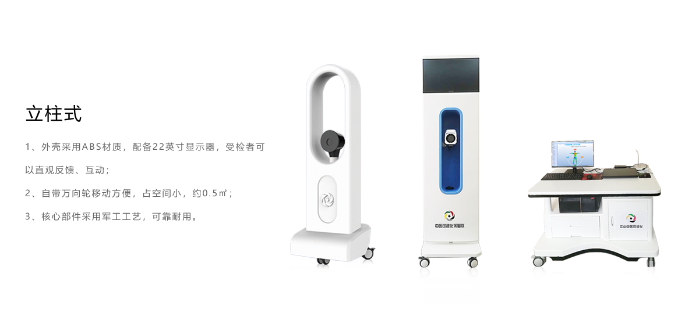

<div class="hardware-view" #hardware [@pulse]="hardwarefalg ? 'closed' : 'enter'">
    <div class="header">
        <div class="nav-title">硬件系列</div>
        <p class="work">— 数据采集工作站 —</p>
        <div class="nav-content">
            所有产品采用
            <span class="select-color">高精确</span>
            的硬件设备，能够保证人体红外温度监测的灵敏性和特异性。设备取得了陕西省食品药品监督管理局颁发的二类医疗器械许可证，产品质量安全可靠。
        </div>
    </div>
    <div class="contents">
        <div class="swiper-container" [swiper]="config">
            <div class="swiper-wrapper">
                <div class="swiper-slide">
                    

                </div>
                <div class="swiper-slide">
                    

                </div>
                <div class="swiper-slide">
                    

                </div>
            </div>
            <div class="swiper-pagination"></div>
        </div>

        <!--<div id="carouselExampleFade" class="carousel slide carousel-fade" data-ride="carousel">-->
            <!--<div class="carousel-inner">-->
                <!--<div class="carousel-item active" data-interval="300">-->
                    <!---->
                <!--</div>-->
                <!--<div class="carousel-item" data-interval="300">-->
                    <!---->
                <!--</div>-->
                <!--<div class="carousel-item" data-interval="300">-->
                    <!---->
                <!--</div>-->
            <!--</div>-->
            <!--<a class="carousel-control-prev" href="#carouselExampleFade" role="button" data-slide="prev">-->
                <!--<span class="carousel-control-prev-icon" aria-hidden="true"></span>-->
                <!--<span class="sr-only">Previous</span>-->
            <!--</a>-->
            <!--<a class="carousel-control-next" href="#carouselExampleFade" role="button" data-slide="next">-->
                <!--<span class="carousel-control-next-icon" aria-hidden="true"></span>-->
                <!--<span class="sr-only">Next</span>-->
            <!--</a>-->
        <!--</div>-->
    </div>

</div>
